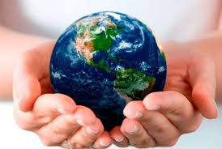
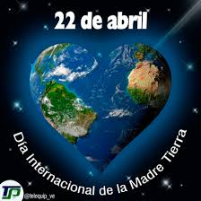
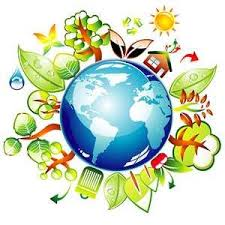
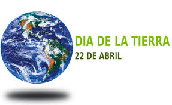
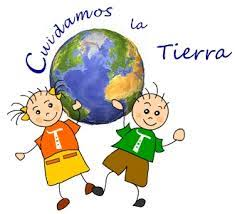
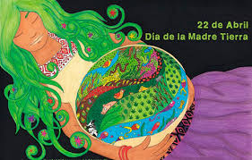

Día internacional de la madre Tierra


- 


- 
- 

Realizado por:
Victor Manuel Pliego León
4.-"E"
Especialidad:
Programación
Submodulo:
Desarrolla Aplicaciones Móviles
Docente:
Lic. José Antonio Gómez Hernández
4.-"E"
Programación
Desarrolla Aplicaciones Móviles
Lic. José Antonio Gómez Hernández
Celebramos el Día Internacional de la Madre Tierra para recordar que el planeta y sus ecosistemas nos dan la vida y el sustento. Con este día, asumimos, además, la responsabilidad, como nos recordaba la Declaración de Río de 1992, de fomentar esta armonía con la Naturaleza y la Madre Tierra. Este día nos brindamos tambien la oportunidad de concienciar a todos los habitantes del planeta acerca de los problemas que afectan a la Tierra y a las diferentes formas de vida que en él desarrollan.
El cambio climático es una de las mayores amenazas para el desarrollo sostenible en todo el mundo y es consecuencia de las acciones insostenibles de la humanidad, que tienen implicaciones directas en la vida de las generaciones futuras. La Convención Marco de las Naciones Unidas sobre el Cambio Climático (CMNUCC pdf document) y el Acuerdo de París pdf document fomentan la cooperación internacional entre las partes sobre educación, formación, conciencianción pública, participación pública y acceso público a la información sobre el cambio climático. Con motivo del décimo aniversario del Día de la Madre Tierra, este año se celebra el noveno Diálogo sobre armonía con la naturaleza de la Asamblea General, el día 22 de abril en la Sede de la ONU de Nueva York, en el Salón del Consejo de Administración Fiduciaria. El Diálogo Interactivo gira en torno al tema "La Madre tierra en la aplicación de la educación sobre el cambio climático". Va a servir para discutir las contribuciones de Armonía con la Naturaleza en garantizar una educación inclusiva, equitativa y de calidad para tomar medidas urgentes para combatir el cambio climático y sus impactos, e inspirar a los ciudadanos y las sociedades a reconsiderar cómo interactúan con el mundo natural en el contexto del desarrollo sostenible, la erradicación de la pobreza y la justicia climática, para garantizar que las personas en todo el mundo tengan la información y el conocimiento necesarios para alcanzar el desarrollo sostenible y los estilos de vida en armonía con la naturaleza.
Madre Tierra es una expresión común utilizada para referirse al planeta Tierra en diversos países y regiones, lo que demuestra la interdependencia existente entre los seres humanos, las demás especies vivas y el planeta que todos habitamos. La Tierra y sus ecosistemas son nuestro hogar. Para alcanzar un justo equilibrio entre las necesidades económicas, sociales y ambientales de las generaciones presentes y futuras, es necesario promover la armonía con la naturaleza y el planeta. Celebramos el Día Internacional de la Madre Tierra para recordar que el planeta y sus ecosistemas nos dan la vida y el sustento. Con este día, asumimos, además, la responsabilidad colectiva, como nos recordaba la Declaración de Río de 1992, de fomentar esta armonía con la naturaleza y la Madre Tierra. Este día nos brinda también la oportunidad de concienciar a todos los habitantes del planeta acerca de los problemas que afectan a la Tierra, y a las diferentes formas de vida que en él se desarrollan.

El 23 de abril de 2018 se realizó en la sede de las Naciones Unidas en Nueva York, el 8° Diálogo Interactivo sobre Armonía con la Naturaleza, en ocasión de la conmemoración del Día Internacional de la Madre Tierra. El evento fue convenido por el Presidente de la Asamblea General, Miroslav Lajcak, quien destacó la importancia del Diálogo para intercambiar ideas sobre desarrollo y patrones de producción y consumo sostenibles en armonía con la naturaleza. Durante la jornada, se discutió sobre cómo los marcos legales y económicos de la Jurisprudencia de la Tierra impactan la implementación de patrones de producción y consumo sostenibles en Armonía con la Naturaleza. El Diálogo se realizó con el objetivo de inspirar a los ciudadanos y las sociedades a reconsiderar la relación que mantienen con la naturaleza, acorde a la meta 12.8 de los Objetivos de Desarrollo Sostenible con respecto a los patrones de consumo y producción sostenibles. Mejorar la base ética de la relación entre la especie humana y la Tierra en el contexto del desarrollo sostenible no es solo beneficioso, sino también necesario.
La gestión integrada de paisajes requiere comprender los diferentes impactos del uso de la tierra y equilibrar los intereses a menudo contradictorios de los diferentes grupos involucrados. Imaginemos que usted forma parte del gobierno del país X en África subsahariana. Desea cumplir con el Objetivo de Desarrollo Sostenible No. 1 que reza: “acabar con la pobreza en todas sus formas en todas partes". Sin embargo, es consciente de la necesidad de implementar todos los 17 Objetivos, incluido el Objetivo 15, que busca: "Gestionar sosteniblemente los bosques, luchar contra la desertificación, detener e invertir la degradación de las tierras y detener la pérdida de biodiversidad.”
